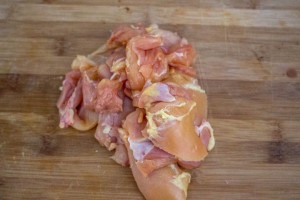
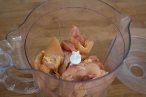
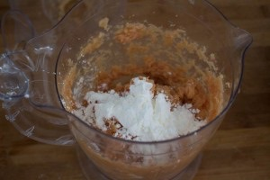
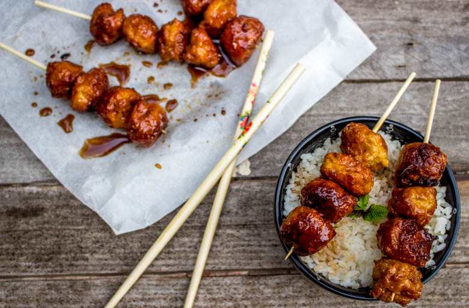

Yakitori au poulet comme les vraies de vraies

Ici vous trouverez comment faire les brochettes tendances du moment : des yakitori au poulet recouverts de leur sauce teriyaki.
Emblème de la cuisine Japonaise en Occident, les yakitoris sont très présents à la cartes des restaurants Japonais en France et de plus en plus de restaurants étoilés s’y mettent eux aussi. Très facile à manger et très conviviales les yakitori au poulet sauront, je suis sûre, trouver une petite place dans votre cuisine (enfin je l’espère!!). Après avoir passé une partie de l’été avec ma sœur et mon chéri à pousser sans cesse la porte du même restaurant pour aller manger ces fameuses petites brochettes je me suis dit qu’il fallait que je les fasse à mon tour (et depuis je ne m’arrête plus) !!
Mais d’abord, savez vous ce que signifie « yakitori »? En Japonais cela signifie « oiseau grillé« ^^ car au Japon à l’époque seul les oiseaux et la volaille pouvaient être embrochés! Il s’agit alors d’un terme qui désigne des brochettes de petites tailles principalement au poulet. Les Japonais les dégustent souvent comme nous on déguste des tapas à l’heure de l’apéro!
La toute première fois que j’ai voulu tenter les yakitori je me suis tournée vers des blancs de poulets et ce fut une grave erreur car le blanc de poulet rend les brochettes très sèches! Je suis donc partie me renseigner (je suis même allé jusqu’à retourner les boites de yakitori qu’on nous vend au rayon sushi dans les supermarchés pour en connaitre la composition) ! J’ai donc appris qu’il ne fallait évidemment pas de blancs de poulet mais des hauts de cuisse de poulet!! Alors ne faites pas la même erreur que moi 😉
Je vous laisse découvrir la recette de ces petites brochettes tendance: les yakitori au poulet et n’hésitez pas à me dire ce que vous en pensez 🙂
Ingrédients
- Hauts de cuisses de poulet - 500g
- Oeuf - 1 jaune
- Gingembre râpé - 1 càc
- Maïzena - 2 càs
- Sauce Yakitori - 2càc
- Ail - 1 petit gousse
- Mirin - 120g
- Maïzena - 10g
- Sauce Soja - 120g
- Cassonnade - 50g
- Saké - 2càs
Instructions
- Dans une casserole à feu moyen, mélanger la sauce mirin avec la cassonade, la sauce soja et le saké
- Dans un bol verser un peu de sauce et mélanger à la maïzena jusqu’à ce qu'elle s'incorpore entièrement
- Ajouter la maïzena dans la casserole et mélanger
- Porter le mélange à ébullition et le laisser pendant 5 bonnes minutes pour qu'il réduise suffisamment
- Vous devez obtenir une sauce plutôt épaisse
- Enlever la peau, désosser les poulets et les découper en morceaux grossiers
- Passer le poulet avec l'ail au mixeur
- Ajouter le jaune d’œufs, la sauce yakitori et pour finir le gingembre
- Mixer le tout
- Incorporer la maïzena au mélange et bien mélanger
- Faire des petites ou moyennes boulettes (selon vos goûts)
- Faire chauffer de l'huile dans une poêle et faire cuire les boulettes jusqu'à ce qu'elles soient bien dorées
- Former vos brochettes avec des pics à brochettes (comptez 3 à 4 boulettes par pics) et nappez-les bien généreusement de la sauce teriyaki préparée initialement
- Servir avec du riz blanc et déguster chaud




Les tips de la communauté
Recette très appréciée et testée avec succès par de nombreux lecteurs. La préparation des brochettes avec poulet mixé surprend certains mais s'avère excellente. Sauce teriyaki savoreuse et technique bien expliquée.
Astuces
- Les piques à brochette métalliques doivent être utilisées directement pour le BBQ
- Possible de cuire au four ou à la poêle si pas de BBQ disponible
- Surveiller la cuisson car les boulettes cuisent rapidement
- Utiliser une sauce teriyaki prête si on ne peut pas trouver mirin et saké
- Remplacer par des morceaux complets de poulet si on n'aime pas le mélange haché
Variantes suggérées
- Variante tsukune (brochettes de viande hachée en boulettes)
- Utiliser des morceaux complets de poulet au lieu de poulet mixé
- Cuisson au four ou à la poêle en alternative au BBQ
- Sauce teriyaki du commerce comme alternative à la préparation maison
Ajustements signalés
- Mélanger le poulet au robot peut créer une texture trop mouillée - laisser sécher ou ajuster avec œufs/farine si nécessaire
- Les boulettes tiennent mieux si on utilise un wok ou une pierre à griller plutôt qu'une friteuse avec panier